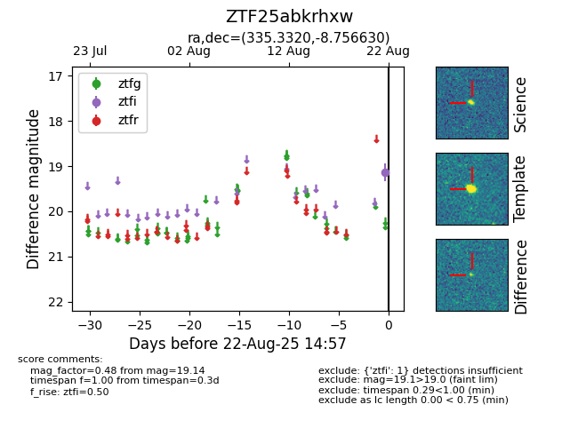

Target ZTF25abkrhxw at 2025-08-22 15:41, see:
FINK: fink-portal.org/ZTF25abkrhxw
Lasair: lasair-ztf.lsst.ac.uk/objects/ZTF25abkrhxw
ALeRCE: alerce.online/object/ZTF25abkrhxw
alt names
ZTF25abkrhxw (ztf,alerce)
coordinates:
equatorial (ra, dec) = (335.3320,-8.75663)
galactic (l, b) = (53.1663,-50.08580)
photometry
last ztfi=19.14
1 ztfi detections
